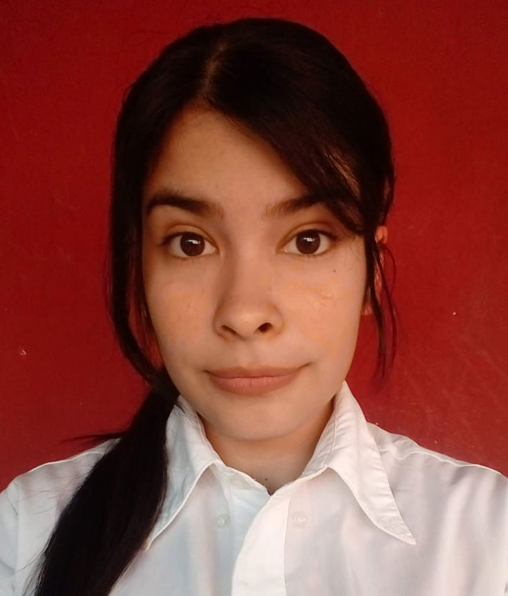

Bienvenido a mi Porfolio

SOBRE MI
Mi nombre es Priscila Angeles Centurión Fuentes.
Nacida en Argentina, Buenos Aires.
Edad: 23 años - 19/10/1999.
Termine el secundario y ahora estudio de forma autodidacta todo lo referido al Front End.
Apasionada por el diseño, intentando mejorar con mucha dedicación.
Educación
- Primario:
- Escuela primaria N° 69, Cervantes, Merlo, Buenos Aires
Secundario:
- Escuela de educacion secundaria N° Media 5, Parque san Martin, Merlo, Buenos Aires.
- Titulo: Bachiller en Cs. Naturales.
Priscila Centurión
Front-End Developer
HTML
CSS
Javascript
Hobbies y demás conocimientos.
- Illustrator
- Photoshop
- Figma
- Dibujo Digital y Tradicional.
- HTML
- CSS
- Javascript
- GIT
- React
Front-End en OpenBootcamp:
- HTML
- CSS
- Javascript
- GIT
Front-End en Ticmas Academy:
Social Media
Bienvenido :D
Este es mi humilde porfolio para el proyecto de Ticmas Academy, no es mucho pero espero sea del agrado de quien lo este viendo en este preciso momento, si, VOS.